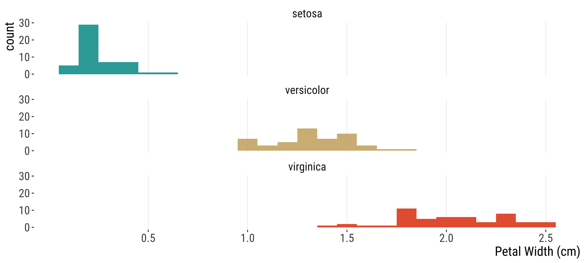
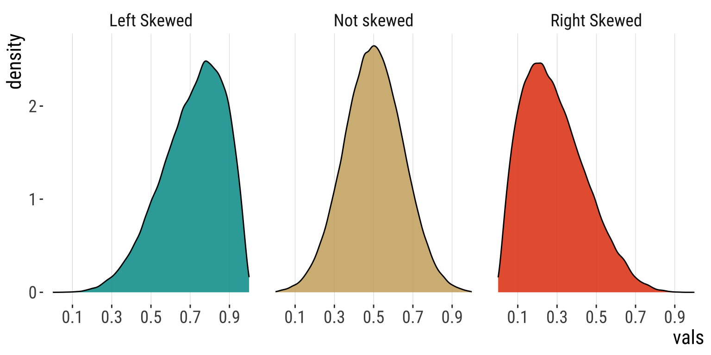

2.2.Displaying & Describing Data
Measures of central tendency and spread
Bárbara D. Bitarello
2025-09-17
Last time
- Mean
- Median
Today
- Median example
- Mode
- Estimates of width
- Explanatory and exploratory figures
- Best practices in figure design
- How data types drive figure design
- How to make effective tables
Attention
Estimate = \(\bar{Y}, \bar{x}, \text{etc.}\) (sample mean)
- Variable
Parameter = \(\mu\) (population mean) - Constant
Practice: Median with even sample size
Calculate the median of the following 10 numbers: \(12, 2, 9, 18, 4, 1, 10, 19, 14, 17\)
Mean x Median
The mean is more convinient mathematically.
The mean is the center of gravity
The median is a better descriptor for skewed population distributions.
The median is the middle measurement.
Both can lead to values that don’t actually exist in the sample. E.g., the average number of eggs laid by chickens in a farm might be 5.5 and the median number of children millennials have might be 1.2
Case Study
2005 U.S. Census. The plot shows the income per household distribution for the bottom 98% of the population. Median = \(\sim46\)k; Mean: \(\sim63\)k.

Mean or Median?
Number of seeds per fruit. Which one is better in this case?
Mode
The most common value observed in a sample
easy to pick out as the peak in a histogram
Useful because it always reflects a value actually seen in the dataset, unlike mean and median
Mode
The most common value observed in a sample
Unimodal vs bimodal (multimodal)
Multimodal data usually reflects data has multiple (at least two) values that are equally common.
Often results from two or more underlying groups being measured together.
Can be used with data that isn’t numeric
But how will you know how your data is distributed?
First step: plot your data
Skewness
Skewness
Left: Asymmetric Few small values. \(>1/2\) of values exceed the mean.
Middle: Symmetric As many large as small values. \(\sim1/2\) of values exceed the mean.
Right: Asymmetric Few large values. \(<1/2\) of values exceed the mean.
Histograms reveal measures of center
Recall the iris dataset

Histograms reveal measures of center
Code
library(ggplot2)
ggplot(iris, aes(x = Petal.Width, fill = Species)) +
geom_histogram(binwidth = 0.1, show.legend = FALSE,
alpha = 0.9) + xlab("Petal Width (cm)") + facet_wrap(~Species,
ncol = 1) + scale_x_continuous(breaks = seq(0.5,
2.5, 0.5)) + scale_fill_manual(values = wesanderson::wes_palette("AsteroidCity1")) +
bb_theme()Measures of dispersion
Range [
max value - min value]Quartiles, interquartile range [
75th percentile - 25th percentile]Variance [ estimate = \(s^2\) =\(\frac{\Sigma(x_i - \bar{x})^2}{n-1}\), param = \(\sigma ^2\) = \(\frac{\Sigma(x_i - \bar{x})^2}{n}\) ]
Standard deviation [ estimate = \(s\) =\(\sqrt{s^2}\), param = \(\sigma\) = \(\sqrt{\sigma^2}\) ]
Coefficient of variation [ estimate = CV = \(\frac{s}{\bar{Y}}\), param = \(\frac{\sigma}{\mu}\) ]
Range
The difference between the maximum and minimum observed values in a sample
Range
Range of weight of 46 chicks at 20 days since birth
Max and Min in this dataset at time 20:
That’s all for today

From: makeameme.org
B21: Biostatistics with R